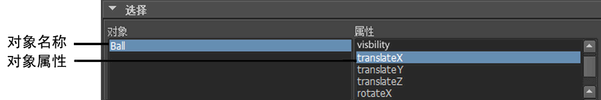

创建表达式后，稍后可能决定对其进行更改，以创建不同的动画效果。若要编辑表达式，可以将其显示在“表达式编辑器”(Expression Editor)中。以下部分介绍了如何查找和显示表达式以进行编辑。
按名称查找表达式
若要查找表达式，可以从场景中的所有表达式的列表中进行选择。
按名称搜索表达式
- 在表达式编辑器中，单击。
“表达式”(Expressions)列表显示在“表达式编辑器”(Expression Editor)中。该列表显示了为场景创建的所有表达式。

- 单击列表中的表达式。
表达式内容显示在表达式文本字段中。
如果未记住该表达式的名称，单击列表中的每个名称，直到所需的表达式出现在表达式文本字段中为止。
注： 对于粒子形状节点，可以创建一个创建表达式、动力学前运行时表达式执行、动力学后运行时表达式执行，或全部这三个。所有表达式都列于一个名称（粒子形状节点的名称）下。您不能命名或重命名此类表达式。若要找到此类表达式，在“表达式”(Expressions)列表中查找关粒子形状节点的名称。
单击相应的“动力学前/后运行时”(Runtime before/after dynamics)或“创建”(Creation)复选框以显示所需的表达式。
按选定对象查找表达式
如果忘记了表达式的名称，可以通过选择受影响的对象找到它。对于非粒子形状节点，也可以从“属性”(Attributes)列表中选择受影响的属性以缩小表达式的搜索范围。
按对象和属性名称搜索表达式
- 在“大纲视图”(Outliner)、“Hypergraph”或“工作区”(workspace)中选择对象或节点。
- 在表达式编辑器（）中，单击。
这是“表达式编辑器”(Expression Editor)的默认搜索设置。
- 选择。
选定对象的名称和相应属性将显示在窗口中。
 - 对于不同于粒子形状节点的对象，单击由表达式控制的属性名称。
如果已忘记由表达式控制的属性名称，请选择。“属性”(Attributes)列表仅显示由选定对象的由表达式控制的属性。单击“属性”(Attributes)列表中的每个属性，直到在表达式文本字段中看到所需的表达式为止。
无法为粒子图形的每个属性编写不同的表达式，而对于其他类型的对象则可以。因为只可以为每个粒子图形编写一个创建表达式和两个运行时表达式（动力学前和动力学后计算），不需要从“表达式编辑器”(Expression Editor)的“属性”(Attributes)列表中选择一个属性。有关详细信息，请参见关于粒子表达式。
注： “属性”(Attributes)列表仅显示未锁定、可设定关键帧的属性。您可以使用通道控制编辑器（）选择属性为可设置关键帧还是已锁定。若要为未显示在列表中的任何不可设置设定关键帧的属性编写表达式，请在“选定对象和属性”(Selected Obj & Attr)文本框中输入“object.attribute”名称。
按项目类型查找表达式
您可以基于对象类型或表达式所影响的项目来查找表达式。例如，如果忘记了表达式的名称，但是记得将其应用于着色器节点，则可以将搜索范围缩小为在场景中控制着色器节点的表达式。
按项目类型搜索表达式
- 在表达式编辑器中，单击。
- 从“对象过滤器”(Object Filter)菜单中，选择对象的类型或表达式所影响的项目。
- 选择。
- 从“对象”(Objects)列表中选择受影响的对象或项目。
- 从“属性”(Attributes)列表中选择受影响的属性。
控制属性的表达式将显示在表达式文本字段中。
示例
假设您已编写了用于控制名为 Searchlight 的聚光灯变换节点的“rotateZ”属性的表达式。请执行以下操作：
查找表达式
- 单击。
- 选择。
在该示例中，您未选择。“rotateZ”属性是灯光的变换节点的属性，而非灯光对象本身。
- 选择。
- 从“对象”(Objects)列表中选择对象“Searchlight”。
- 在“属性”(Attributes)列表中单击“rotateZ”。
表达式将显示在表达式文本字段中。